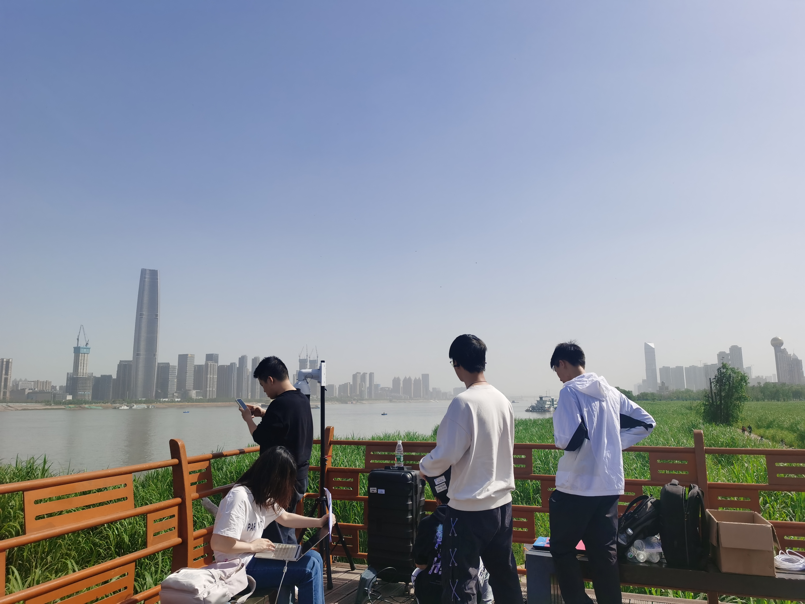
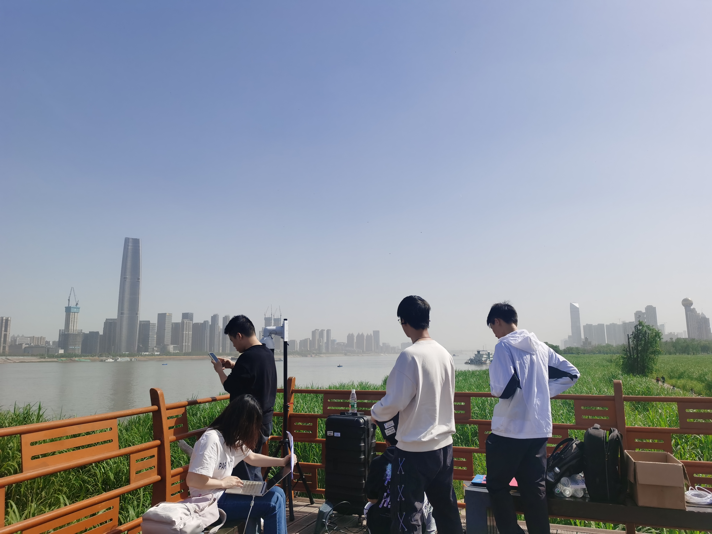

Abstract
The automatic identification system (AIS) and video cameras have been widely exploited for vessel traffic surveillance in inland waterways. The AIS data could provide vessel identity and dynamic information on vessel position and movements. In contrast, the video data could describe the visual appearances of moving vessels without knowing the information on identity, position, movements, etc. To further improve vessel traffic surveillance, it becomes necessary to fuse the AIS and video data to simultaneously capture the visual features, identity, and dynamic information for the vessels of interest. However, the performance of AIS and video data fusion is susceptible to issues such as data spatial difference, message asynchronous transmission, visual object occlusion, etc. In this work, we propose a deep learning-based simple online and real-time vessel data fusion method (termed DeepSORVF). We first extract the AIS- and video-based vessel trajectories, and then propose an asynchronous trajectory matching method to fuse the AIS-based vessel information with the corresponding visual targets. In addition, by combining the AIS- and video-based movement features, we also present a prior knowledge-driven anti-occlusion method to yield accurate and robust vessel tracking results under occlusion conditions. To validate the efficacy of our DeepSORVF, we have also constructed a new benchmark dataset (termed FVessel) for vessel detection, tracking, and data fusion. It consists of many videos and the corresponding AIS data collected in various weather conditions and locations. The experimental results have demonstrated that our method is capable of guaranteeing high-reliable data fusion and anti-occlusion vessel tracking.
 
